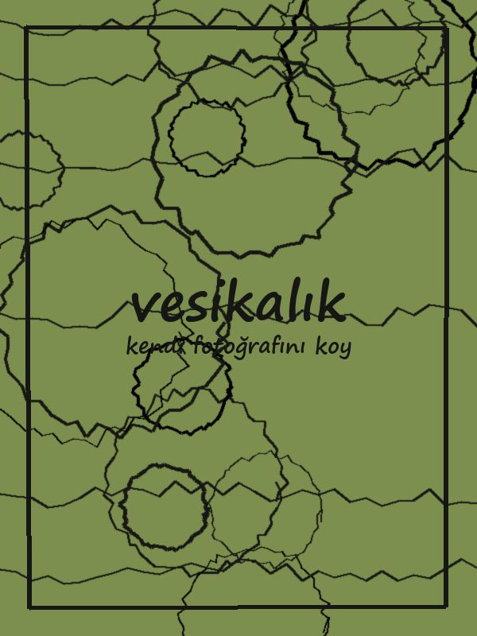

Örnek Anadolu Lisesi
Sayısal bölüm, diploma notu 89/100. Bilişim dersinde ilk web sayfamı yaptım; robotik kulübünde kodun gerçek dünyada bir şeyleri hareket ettirdiğini gördüm ve iş ciddileşti.
her şey burada başladıİstanbul'da yaşayan, Örnek Üniversitesi Bilgisayar Mühendisliği 2. sınıf öğrencisiyim. Gündüzleri algoritma çözüyor, geceleri HTML, CSS ve JS ile elle çizilmiş gibi duran arayüzler kuruyorum.
aşağı kaydır, defter kendini doldursun

Eğitim, staj ve sertifikalar tek bir yolda. Kağıt uçağı takip et: kaydırdıkça yol çiziliyor, her durakta özgeçmişime bir damga basılıyor.
Sayısal bölüm, diploma notu 89/100. Bilişim dersinde ilk web sayfamı yaptım; robotik kulübünde kodun gerçek dünyada bir şeyleri hareket ettirdiğini gördüm ve iş ciddileşti.
her şey burada başladıLisans, 2. sınıf. GNO 3,24 / 4,00. Veri yapıları, algoritmalar ve web tasarım dersleriyle "çalışıyor" ile "iyi çalışıyor" arasındaki farkı öğreniyorum.
hâlâ devam ediyor ✎120 saatlik çevrim içi program: modern CSS, erişilebilirlik ve JavaScript ile 12 küçük proje. En sevdiğim: kendi kendini çizen bir yapılacaklar listesi.
gece 3'te bitti20 iş günlük zorunlu yaz stajı. Kod incelemesi, Git akışı ve tasarımdan koda süreçleri; bir de "canlıya çıkarken" kalbin nasıl attığını öğrendim.
ilk PR'ım birleşti!Yeni bir staj, açık kaynak katkıları ya da birlikte çizeceğimiz bir proje. Defterin bu sayfası henüz boş.
birlikte yazalım →seviyeler CEFR'ye göre
Bilgisayar Mühendisliği 2. sınıf, güz dönemi. Kareli defterime kurşun kalemle doldurdum; fosforlu kalemin rengi dersin türünü söylüyor.
| Saat | Pazartesi | Salı | Çarşamba | Perşembe | Cuma |
|---|---|---|---|---|---|
| – | Veri YapılarıBIL201 · D-204 | AlgoritmalarBIL205 · D-105 | Diferansiyel DenklemlerMAT203 · A-08 | Lineer CebirMAT201 · A-12 | Olasılık ve İstatistikIST201 · B-110 |
| – | Lineer CebirMAT201 · A-12 | Olasılık ve İstatistikIST201 · B-110 | Veri Yapıları (lab)BIL201L · Lab-1 | AlgoritmalarBIL205 · D-105 | Diferansiyel DenklemlerMAT203 · A-08 |
| – | öğle arası · yemekhane kuyruğu · bir kahve daha | ||||
| – | Web TasarımWEB211 · Lab-3 | Grafik Animasyon 1GRA213 · Lab-5en sevdiğim! | Akademik İngilizceING201 · Y-02 | Web Tasarım (uygulama)WEB211 · Lab-3 | Akademik İngilizceING201 · Y-02 |
| – | boş · kütüphane | topluluk toplantısı | boş · basketbol | hafta sonu modu | |
| Toplam | 8 ders · haftada 15 blok · 30 AKTS | ||||
Her çubuk, kalemin o konuda ne kadar karaladığını gösteriyor. Ne kadar sık tarama, o kadar çok pratik. Yüzdeler kaydırınca kendini çiziyor.
not: yüzdeler tamamen bilimsel yöntemlerle, yani gece yarısı kendi kendime sorarak hesaplandı.
console.log ustası
merge conflict'ten korkmam (artık)
JOIN'lerle aram iyi
Biri sıralı, biri karmakarışık: favori teknolojilerimi kürsüye çıkardım, gerisini bir post-it'e karaladım.
:has() geldiğinden beri her gün bayram2019'da defterime yazdığım ilk animasyon: tek bir @keyframes kuralı ve animation özelliğiyle zıplayan bir top. Bugün hâlâ aynı sırrı kullanıyorum: önce ez, sonra yaylandır.
/* 2019 · ilk animasyonum: zıplayan top */
.ball {
width: 60px;
aspect-ratio: 1;
border-radius: 50%;
animation: bounce .8s ease-out infinite alternate;
}
@keyframes bounce {
from { transform: translateY(0) scale(1.15, .85); } /* ez */
to { transform: translateY(-140px) scale(.95, 1.05); } /* yaylan */
}zıplama: 0
Düğmeye bas ya da odaklanıp Enter'a bas: yukarıdaki kod gerçekten çalışıyor.
Post-it'lere tıkla (ya da odaklanıp Enter'a bas): arkalarında küçük itiraflar var.
Her büyük proje bir karalamayla başlar.